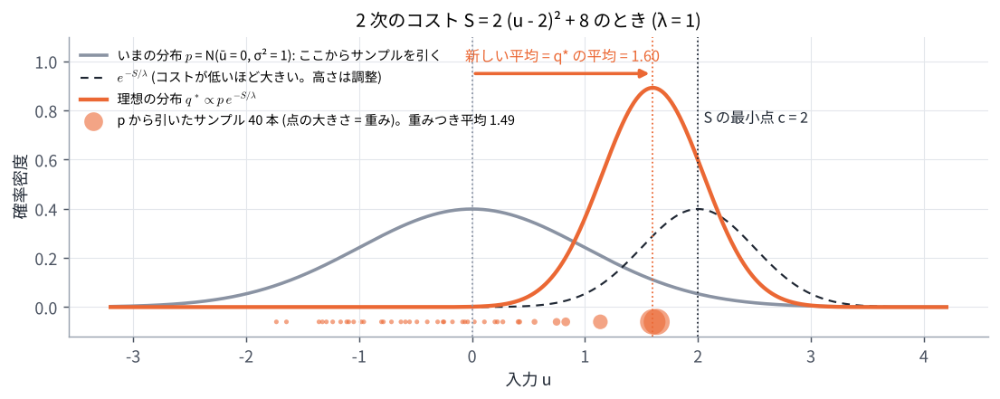
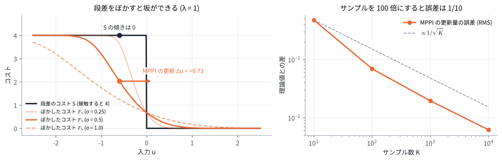

06. MPPI の理論 (なぜ重みつき平均なのか)
この章のゴール
- 理想の分布 \(q^* \propto p\, e^{-S/\lambda}\) が「コストを下げつつ、今のばらつきから離れすぎない」問題の答えであることが分かる
- 重点サンプリングで \(q^*\) の平均を推定したものが、MPPI の更新式であることが分かる
- サンプルを増やすと、MPPI の更新は「ぼかしたコスト \(F_\lambda\) の坂を下る」勾配法になることが分かる
- 2 次のコストなら、LM 法と同じ形 \(\Delta u = -(A + \lambda\Sigma^{-1})^{-1} \nabla S\) になることを確かめる
つながり 05 章 の式の由来です。最後に 02 章 の LM 法と結びつけ、07 章 の比較の土台にします。式変形が多い章なので、まず各節の太字の結論と図を追い、導出は 2 回目に読むのがおすすめです。
0. この章で使う記号
| 記号 | 意味 |
|---|---|
| \(V\) | サンプルした入力の列 (確率的に決まる) |
| \(p(V)\) | 今のばらつき。平均が今の案 \(U\)、共分散 \(\Sigma\) の正規分布 \(\mathcal N(U, \Sigma)\) |
| \(q(V)\) | 入力の列のばらつき (これを選ぶ) |
| \(\mathbb E_q[\cdot]\) | \(V \sim q\) のときの平均 (期待値) |
| \(\mathrm{KL}(q \,\Vert\, p)\) | 2 つの分布の違いの大きさ (KL ダイバージェンス)。0 以上で、\(q = p\) のときだけ 0 |
| \(F_\lambda\) | コストをぼかしたもの (4 節) |
| \(A\), \(c\) | 2 次のコスト \(S(u) = \frac12 (u - c)^\top A (u - c)\) の曲がり具合と最小点 (5 節) |
1. 1 本の入力の列から、入力の列の「ばらつき」へ
MPC は 1 本の入力の列 \(U\) を選びました。MPPI は、入力の列のばらつき (確率分布) \(q\) を選ぶ問題に置きかえます。目標は次の 2 つのつり合いです。
- 平均のコスト \(\mathbb E_q[S(V)]\) を下げたい
- 今のばらつき \(p\) から離れすぎたくない (離れすぎると、手元のサンプルで評価できない)
\(\lambda\) はつり合いの重みです。この問題の答えは、次の分布になります。
今のばらつき \(p\) を、コストが低い入力の列ほど \(e^{-S/\lambda}\) 倍だけ出やすくなるように作り直したもの、という意味です。\(\eta\) は合計を 1 にするための定数です。
導出 (2 行で済みます)
どんな \(q\) についても、KL の定義 \(\mathrm{KL}(q \Vert p) = \mathbb E_q[\log q - \log p]\) を使うと
KL は 0 以上で、\(q = q^*\) のときだけ 0 なので、最小値 \(-\lambda \log \eta\) を取るのは \(q = q^*\) のときです。
\(\lambda\) が大きいほど \(p\) から離れにくく (\(q^* \approx p\))、小さいほどコストの低い所に集中します。05 章で見た \(\lambda\) のふるまいと同じです。
2. 新しい案 = 理想の分布の平均
実際に扱えるのは「平均 \(U'\)、共分散 \(\Sigma\) の正規分布」だけです (サンプルを引くのも、実行するのも、平均の入力の列)。そこで、\(q^*\) にいちばん近い正規分布を選びます。それは平均を \(q^*\) の平均に合わせたもの です。
導出
\(q^*\) と \(\mathcal N(U', \Sigma)\) の違い \(\mathrm{KL}(q^* \Vert \mathcal N(U', \Sigma))\) のうち、\(U'\) に関係する部分は \(\frac12 \mathbb E_{q^*}[(V - U')^\top \Sigma^{-1} (V - U')]\) だけです。これを \(U'\) で微分して 0 とおくと \(\Sigma^{-1}\, \mathbb E_{q^*}[V - U'] = 0\)、つまり \(U' = \mathbb E_{q^*}[V]\) です。
2 次のコスト \(S(u) = 2(u - 2)^2 + 8\)、今の案 \(u = 0\)、\(\sigma = 1\)、\(\lambda = 1\) の例で描くと次のようになります (演習 6)。

灰色の \(p\) と点線の \(e^{-S/\lambda}\) の積が、オレンジの \(q^*\) です。\(q^*\) の平均 1.6 が新しい案になります。コストの最小点 \(u = 2\) までは一気に行かず、今の案から 1.6 だけ進みます。この「一気に行かない」性質は 5 節で LM 法の慎重さとして説明します。
3. 重点サンプリング: \(q^*\) から引けないので、\(p\) から引いて重みで直す
\(q^*\) の平均を求めたいのですが、\(q^*\) から直接サンプルを引くことはできません (\(\eta\) も分からない)。そこで、引きやすい \(p\) からサンプルを引き、\(q^*\) と \(p\) の比で重みをつけて平均します。これを 重点サンプリング と呼びます。
\(V^k = U + E^k\) (\(E^k\) はゆらぎの列) で、重みの合計は 1 なので、
これが 05 章の更新式 (1) そのものです。 重みが \(e^{-S_k/\lambda}\) なのは、\(q^*\) が \(p\) に \(e^{-S/\lambda}\) をかけた形だからです。上の図の下に並んだ点は、\(p\) から引いた 40 本のサンプルで、点の大きさが重みです。重みつき平均は 1.49 で、本当の平均 1.6 に近い値になっています。
3.1 補正項 \(\lambda\, u^\top \Sigma^{-1} \varepsilon\) の由来
元の論文では、1 節の \(p\) を「今のばらつき \(\mathcal N(U, \Sigma)\)」ではなく、「入力を何もしないときのばらつき \(\mathcal N(0, \Sigma)\)」にしています。すると、サンプルを引く分布 (\(U\) のまわり) と \(p\) (0 のまわり) がずれるので、重みにその比 \(\mathcal N(V; 0, \Sigma) / \mathcal N(V; U, \Sigma)\) がかかり、コストに次の項が足されます。
導出
1 ステップぶんで、\(V = U + \varepsilon\) とすると
最後の項はサンプルによらない定数なので、正規化で消えます。残った \(e^{-U^\top \Sigma^{-1} \varepsilon}\) を \(e^{-S/\lambda}\) とまとめると、\(e^{-(S + \lambda U^\top \Sigma^{-1} \varepsilon)/\lambda}\) になります。
この項は、入力を大きくする向きのゆらぎ (\(u_t\) と同じ向きの \(\varepsilon_t\)) を少し罰し、入力を小さく保つ (省エネ) 方向に働きます。Nav2 ではこの係数を \(\lambda\) ではなく gamma という別のパラメータにしていて、ドキュメントでは「なめらかさ (大きい値) と省エネ (小さい値) のつり合い」と説明されています (08 章)。
4. サンプルを増やすと: ぼかしたコストの坂を下る
サンプルを無限に増やしたとき、MPPI の 1 回の更新量 \(\Delta u\) は何を計算しているのでしょうか。答えは、次の「ぼかしたコスト」の坂を下る勾配法です。
導出 (正規分布の微分の性質を使います)
サンプル無限の更新量は \(\Delta u = \mathbb E[\varepsilon\, e^{-S(\bar u + \varepsilon)/\lambda}] \,/\, \mathbb E[e^{-S(\bar u + \varepsilon)/\lambda}]\) です。一方、\(G(\bar u) = \mathbb E[e^{-S(\bar u + \varepsilon)/\lambda}] = \int \mathcal N(v; \bar u, \Sigma)\, e^{-S(v)/\lambda}\, dv\) を \(\bar u\) で微分すると、正規分布の密度の微分 \(\nabla_{\bar u} \mathcal N(v; \bar u, \Sigma) = \mathcal N(v; \bar u, \Sigma)\, \Sigma^{-1} (v - \bar u)\) より
です。\(F_\lambda = -\lambda \log G\) なので、\(\nabla F_\lambda = -\lambda \nabla G / G = -\lambda\, \Sigma^{-1} \Delta u\) となり、式 (4) が得られます。コストの微分 \(\nabla S\) を一度も使っていないことに注意してください。
4.1 \(F_\lambda\) は何か
\(F_\lambda(\bar u)\) は、今の案 \(\bar u\) のまわり (ゆらぎの幅 \(\Sigma\) の範囲) のコストを、低いほうを重視して平均したもの です。1 節の最小値 \(-\lambda \log \eta\) と同じもので、統計物理の言葉では自由エネルギーと呼ばれます。
- \(\lambda \to \infty\): \(F_\lambda \to \mathbb E[S(\bar u + \varepsilon)]\)。コストを正規分布でぼかしただけのもの
- \(\lambda \to 0\): \(F_\lambda\) はまわりのコストのいちばん低い値に近づく
つまり MPPI は、元のコスト \(S\) ではなく、それをぼかした \(F_\lambda\) の坂を、歩幅 \(\Sigma / \lambda\) で下っています。
4.2 段差のコストでも坂ができる
「接触する側 (\(u < 0\)) は 4、しない側は 0」という段差のコストで確かめます。\(\sigma = 0.5\)、\(\lambda = 1\)、今の案 \(\bar u = -0.6\) (接触する側) です (演習 6)。

- 元のコスト \(S\) は \(\bar u = -0.6\) で平らなので、傾きは 0。勾配を使う方法は動けない
- ぼかしたコスト \(F_\lambda\) には右へ下る坂があり、式 (4) の更新量は \(\Delta u = +0.726\)。1 回の更新で \(\bar u = +0.126\) (接触しない側) へ移る
- 実際の MPPI (サンプル \(K\) 本) の更新量は次のとおり
| \(K\) | 更新量の平均 | ばらつき (標準偏差) |
|---|---|---|
| 10 | 0.480 | 0.410 |
| 100 | 0.719 | 0.069 |
| 1,000 | 0.726 | 0.019 |
| 10,000 | 0.726 | 0.006 |
サンプルを 100 倍にすると、ばらつきは約 1/10 になります (\(1/\sqrt{K}\) に比例)。\(K = 10\) では平均も小さめにずれています (重みを合計 1 に正規化することによる偏り)。
ゆらぎが届かないほど遠い段差は見えません。例えば \(\bar u = -3\) (\(6\sigma\) 離れている) なら、ほとんどのサンプルが段差を越えないので、\(F_\lambda\) はほぼ平らで \(\Delta u \approx 0\) です。MPPI が見えるのは、ゆらぎ \(\Sigma\) が届く範囲だけ です。
下のデモで、\(\bar u\)、\(\sigma\)、\(\lambda\) を動かして確かめてください。
5. 2 次のコストなら LM 法と同じ形
コストが 2 次関数 \(S(u) = \frac12 (u - c)^\top A (u - c) + \text{定数}\) (曲がり具合 \(A\)、最小点 \(c\)) のときは、更新量を式で書けます。正規分布 \(\mathcal N(\bar u, \Sigma)\) に \(e^{-S/\lambda}\) をかけたものは、また正規分布になるからです。
導出
\(q^*(u) \propto \exp\bigl(-\frac12 (u - \bar u)^\top \Sigma^{-1} (u - \bar u) - \frac{1}{2\lambda} (u - c)^\top A (u - c)\bigr)\) は、精度行列 (共分散の逆) が \(\Sigma^{-1} + A/\lambda\) の正規分布で、平均は
です。\(\Delta u = m - \bar u = (\Sigma^{-1} + A/\lambda)^{-1} (A/\lambda)(c - \bar u) = (A + \lambda\Sigma^{-1})^{-1} A (c - \bar u)\) で、\(\nabla S(\bar u) = A(\bar u - c)\) なので式 (5) になります。
02 章の LM 法と並べると、役割が 1 対 1 に対応します。
| LM 法 (02 章) | MPPI (サンプル無限、2 次のコスト) | |
|---|---|---|
| 1 回の更新 | \(\Delta z = -(J^\top J + \mu D)^{-1} J^\top r\) | \(\Delta u = -(A + \lambda\Sigma^{-1})^{-1} \nabla S\) |
| 曲がり具合 | \(J^\top J\) | \(A\) |
| 勾配 | \(J^\top r\) | \(\nabla S\) |
| 慎重さ (減衰) | \(\mu D\) | \(\lambda \Sigma^{-1}\) |
つまり MPPI は、減衰が \(\lambda \Sigma^{-1}\) の LM 法 になっています。\(\lambda\) が小さいか、ゆらぎ \(\Sigma\) が大きいほど大胆 (ニュートン法に近い) で、\(\lambda\) が大きいほど歩幅 \(\Sigma/\lambda\) の慎重な勾配法になります。演習 6 の数値 (\(S = 2(u - 2)^2 + 8\)、つまり \(A = 4\)、\(c = 2\)、今の案 \(\bar u = 0\)) で確かめます。
| \(\sigma\) | \(\lambda\) | 式 (5) | MPPI (\(K = 10{,}000\)) の平均 |
|---|---|---|---|
| 1 | 1 | 1.600 | 1.602 |
| 2 | 1 | 1.882 | 1.882 |
| 1 | 4 | 1.000 | 1.001 |
ニュートン法なら 1 回で最小点まで 2 だけ進みます。MPPI は減衰 \(\lambda/\sigma^2\) のぶんだけ手前で止まります。違いは、LM 法が \(J^\top J\) と \(J^\top r\) を微分で正確に計算するのに対し、MPPI はそれに当たるものをサンプルで推定していることです。
6. まとめ: 2 つの方法はどこが同じで、どこが違うか
| MPC (ガウス・ニュートン法・LM 法) | MPPI | |
|---|---|---|
| 何を下るか | 元のコスト \(S\) | ぼかしたコスト \(F_\lambda\) |
| 傾きの求め方 | 微分で正確に | サンプルで推定 (誤差 \(\propto 1/\sqrt{K}\)) |
| 慎重さ | \(\mu D\) (LM 法) | \(\lambda \Sigma^{-1}\) |
| 段差のコスト | 傾きが 0 で見えない | ぼかすと坂になるので見える |
| 見える範囲 | 今の案のごく近く (微分) | ゆらぎ \(\Sigma\) が届く範囲 |
どちらも「今の案のまわりを調べて、良くなる向きに少し直す」をくり返す方法で、違うのは まわりの調べ方 (微分か、サンプルか) です。この見方で 07 章の比較を読むと、得意・苦手の理由がよく分かります。
演習 6
python exercises/ex06_mppi_theory.py
段差のコストで式 (4) とサンプル数 \(K\) の MPPI を比べ、2 次のコストで式 (5) を確かめ、図を 2 枚作ります。
試してみること:
ubar = -0.6を-1.5や-3.0にすると、理論の更新量はどうなるか- 段差の高さ (
step_costの 4.0) を 40 にすると、\(F_\lambda\) の形と更新量はどう変わるか
理解度チェック
- 式 (1) で KL の項を足すのはなぜか。\(\lambda\) を大きくすると \(q^*\) はどうなるか?
- \(q^*\) から直接サンプルを引かずに、その平均を求めるにはどうするか?
- 補正項 \(\lambda\, u^\top \Sigma^{-1} \varepsilon\) は、何と何の比から出てくるか?
- 段差のコストで、勾配法は動けないのに MPPI が動けるのはなぜか?
- 2 次のコストで \(\lambda \to 0\) とすると、MPPI の更新量はどうなるか?
- \(K = 10\) と \(K = 1000\) で、更新量の平均とばらつきが違うのはなぜか?
答えの例
- 今のばらつき \(p\) から離れすぎない (手元のサンプルで評価できる範囲にとどまる) ようにするため。\(\lambda\) を大きくすると \(q^*\) は \(p\) に近づき、更新が小さくなる。
- 引きやすい \(p\) からサンプルを引き、\(e^{-S_k/\lambda}\) に比例する重みをつけて平均する (重点サンプリング)。
- 論文で \(p\) にした「入力なしのばらつき \(\mathcal N(0, \Sigma)\)」と、実際にサンプルを引く「今の案のまわりのばらつき \(\mathcal N(U, \Sigma)\)」の比。
- MPPI は元のコストではなく、ゆらぎの幅でぼかしたコスト \(F_\lambda\) の坂を下るから。段差もぼかすとなめらかな坂になる。
- \(\Delta u = -A^{-1} \nabla S(\bar u) = c - \bar u\) となり、ニュートン法と同じく 1 回で最小点へ行く。
- 重みつき平均はサンプルで推定しているので、ばらつきは \(1/\sqrt{K}\) に比例して小さくなる。また、重みを合計 1 に正規化するため、\(K\) が小さいと平均も本当の値からずれる (偏り)。
もっと知りたい人へ
- G. Williams, N. Wagener, B. Goldfain, P. Drews, J. M. Rehg, B. Boots, E. A. Theodorou, "Information Theoretic MPC for Model-Based Reinforcement Learning," ICRA 2017, pp. 1714–1721. 1〜3 節の導出の元。
- G. Williams, P. Drews, B. Goldfain, J. M. Rehg, E. A. Theodorou, "Information-Theoretic Model Predictive Control: Theory and Applications to Autonomous Driving," IEEE Transactions on Robotics, 34(6), pp. 1603–1622, 2018.
- E. A. Theodorou, E. Todorov, "Relative entropy and free energy dualities: Connections to Path Integral and KL control," IEEE CDC 2012. 1 節の KL と自由エネルギーの関係。